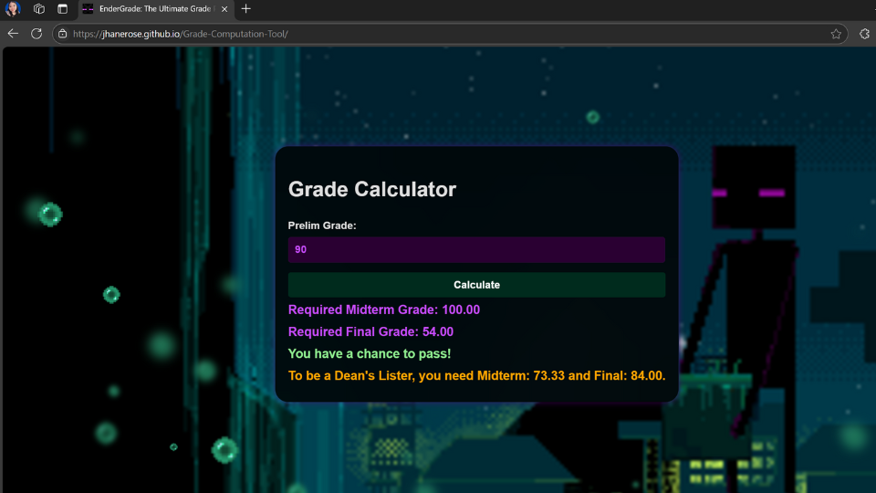
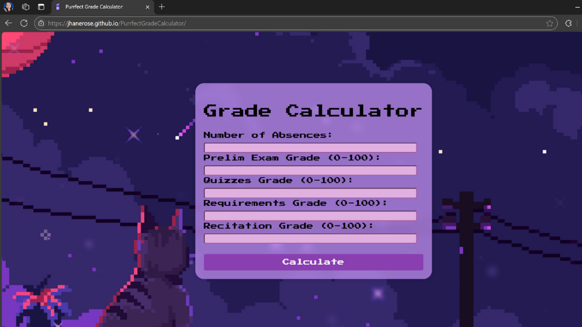
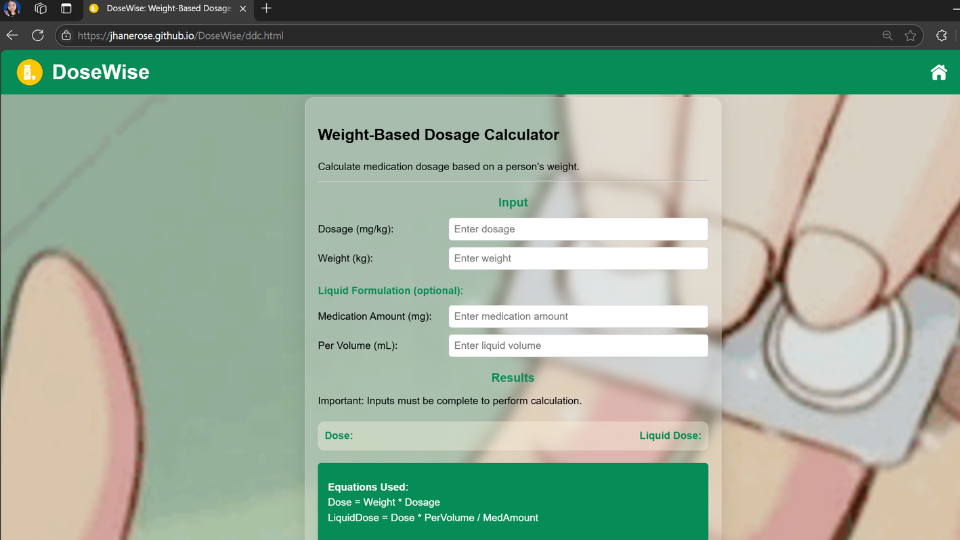
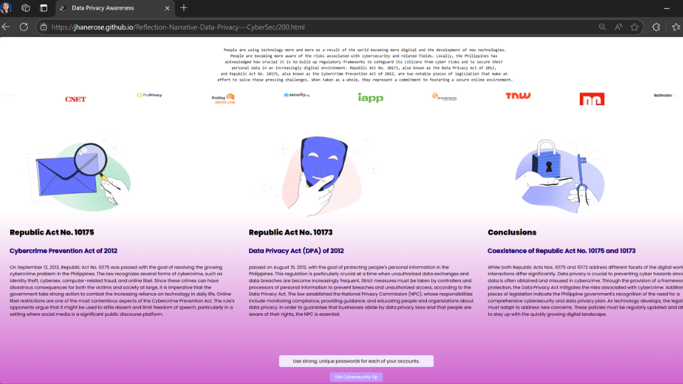

EnderGrade: The Ultimate Grade Portal
EnderGrade is a cutting-edge Prelim Grade Calculator designed to simplify academic life for students. This innovative tool allows users to effortlessly compute and track their preliminary grades with accuracy and ease. With a sleek, user-friendly interface inspired by vibrant pixel art and a playful blend of purple and pink tones, EnderGrade makes grade management both efficient and enjoyable.
Perfect for students striving to stay on top of their performance, EnderGrade combines functionality and style, offering a scrollable, web-friendly design optimized for accessibility on any device. Whether you're planning for success or just curious about your academic progress, EnderGrade is your ultimate companion in achieving your educational goals.

Purrfect Grade Calculator
The Purrfect Grade Calculator is a delightful and efficient tool for students to calculate their grades with precision. Featuring a whimsical pixel-cat theme in charming purple and pink hues, this grade computation tool transforms the task of grade tracking into a fun and engaging experience.
Designed for accuracy and simplicity, the Purrfect Grade Calculator ensures students can easily input their performance metrics and gain clear insights into their academic standing. Whether you’re striving for top marks or simply staying on track, this tool is purr-fectly suited to help you achieve your goals with style and ease!

DoseWise: Weight-Based Dosage Calculator
DoseWise is a reliable and intuitive tool designed to simplify complex weight-based dosage calculations. Perfect for healthcare professionals, students, and anyone needing precise medication dosing, this calculator ensures accuracy and safety every time. With customizable input options for weight, dosage units (e.g., mg/kg, mcg/kg), and liquid formulation, DoseWise adapts seamlessly to various medical and pharmaceutical needs. Its sleek, light green and gray design creates a calming and professional aesthetic, while its automated features eliminate the need for manual calculations. Choose DoseWise for precise, hassle-free, and trustworthy dosage computations.

Reflection Narrative: Data Privacy and Cybersecurity Awareness Campaign
This project features a PyScript-integrated website created to promote Data Privacy and Cybersecurity Awareness. The site serves as a resource hub, offering practical cybersecurity tips and strategies to help individuals safeguard their personal and digital information. The interactive platform showcases engaging animations powered by PyScript, designed to make learning about cybersecurity both informative and captivating. Alongside these tips, the site includes a reflective narrative inspired by insights gained during a cybersecurity seminar. This reflection highlights key takeaways, personal experiences, and actionable knowledge to empower visitors in today's digital age. With a focus on education and advocacy, this project combines technology and awareness to emphasize the importance of protecting oneself in the ever-evolving world of cybersecurity.